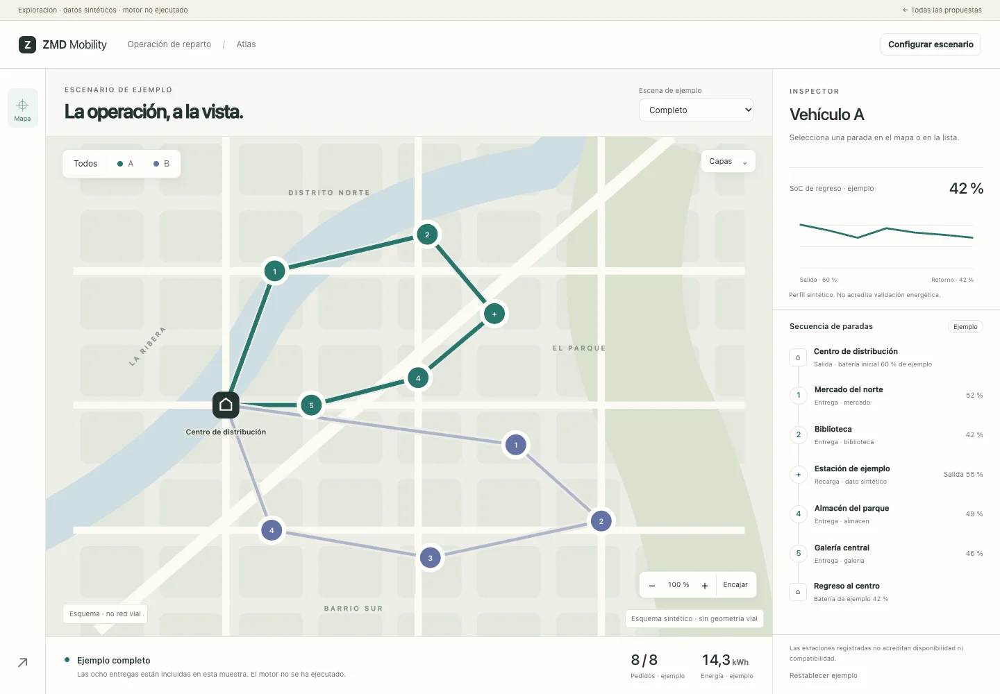
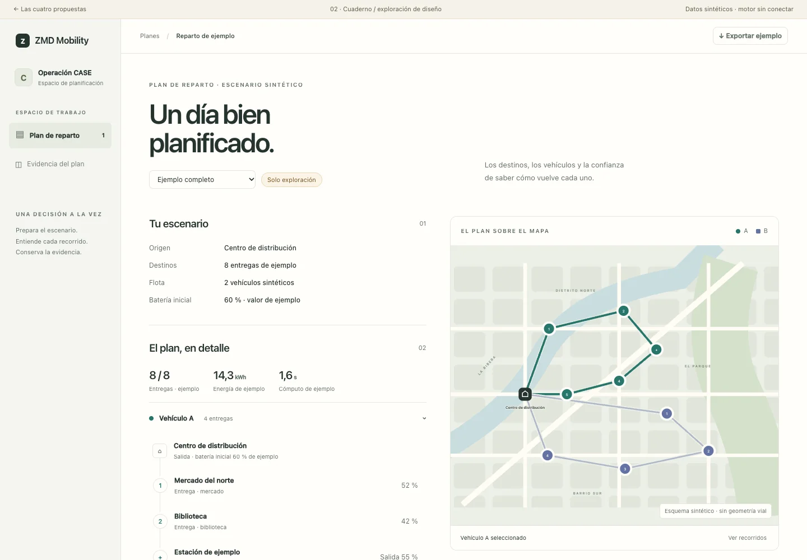
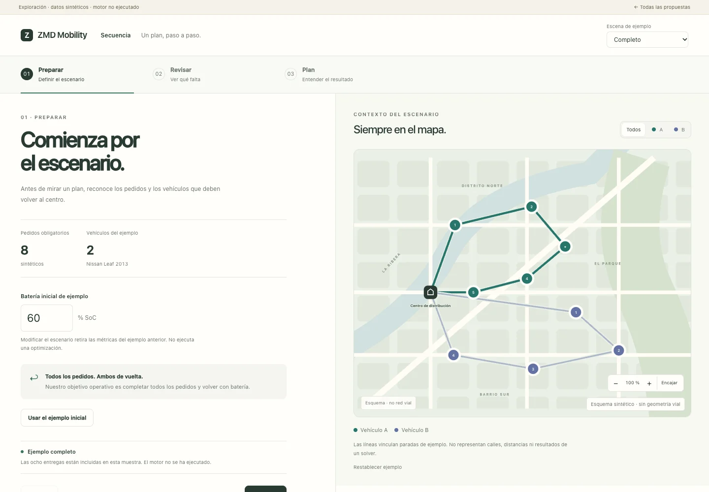
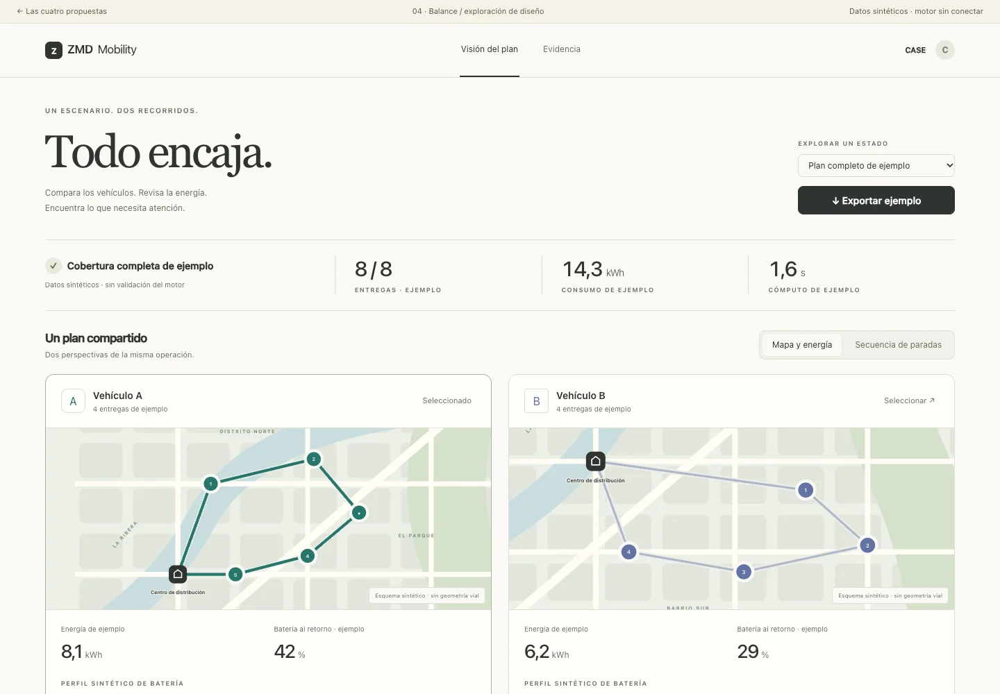

Abrir prototipo ↗
Pensar desde el territorio.
El mapa es el espacio de trabajo. Seleccionas una ruta o una parada y el detalle aparece junto a ella, sin perder el contexto.
Mejor paraExplorar la operación y relacionar lugares.Su compromisoLa jerarquía de controles debe cuidar el espacio del mapa.
Explorar Atlas ↗

Abrir prototipo ↗
Un plan que se puede leer.
La operación se organiza como un documento vivo: escenario, resultado, recorridos y evidencia. Un mapa acompaña la lectura.
Mejor paraEntender, explicar y revisar el resultado con calma.Su compromisoMenos superficie cartográfica; la lectura es más vertical.
Explorar Cuaderno ↗

Abrir prototipo ↗
La siguiente decisión, siempre clara.
Un recorrido guiado revela lo necesario en cada etapa. Preparar, revisar y explorar el plan tienen su propio momento.
Mejor paraPrimer uso y una demostración de principio a fin.Su compromisoMás cambios de etapa para quien ya conoce la operación.
Explorar Secuencia ↗

Abrir prototipo ↗
Dos recorridos, a la misma altura.
Los vehículos comparten una vista de comparación. Energía, regreso y secuencia se leen en paralelo para encontrar diferencias.
Mejor paraComparar vehículos y revisar el reparto de la operación.Su compromisoNecesitará agrupar o filtrar cuando crezca la flota.
Explorar Balance ↗